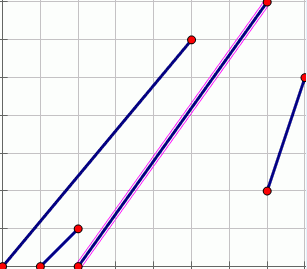

BZPRO
#3076. [Usaco2013]Hill Walk
内存限制：128 MiB
时间限制：10 Sec
提交
提交记录
讨论
题目描述
贝茜要爬山，每一段山路都可以抽象成一个线段，其两个端点分别为
(x1,y1)/(x2,y2)(x1<x2, y1<y2)
，但是
(x2,y2)
这个点是空的。题目保证任意两条线段都不交叉、相交（甚至在端点），并保证第一端山路的起点
(x1,y1)
必然是
(0,0)
。现在贝茜要从原点开始爬，对于每一段山路都会从起点爬到终点。到了终点
(x2,y2)
时，就会笔直地往下跳（即
y
不断减小，
x
不变），直到落到下一端山路上。若贝茜会掉到
y=-
∞，则爬山结束。现在
FJ
给出了所有山路的状况，贝茜想知道她能爬几段山路。
输入格式
输出格式
样例
样例输入
4 --山路数目
0 0 5 6 --第一段山路
1 0 2 1
7 2 8 5
3 0 7 7
样例输出
3
数据范围与提示

数据范围：
1<=N<=100000,
0<=x1,y1,x2,y2<=10
9